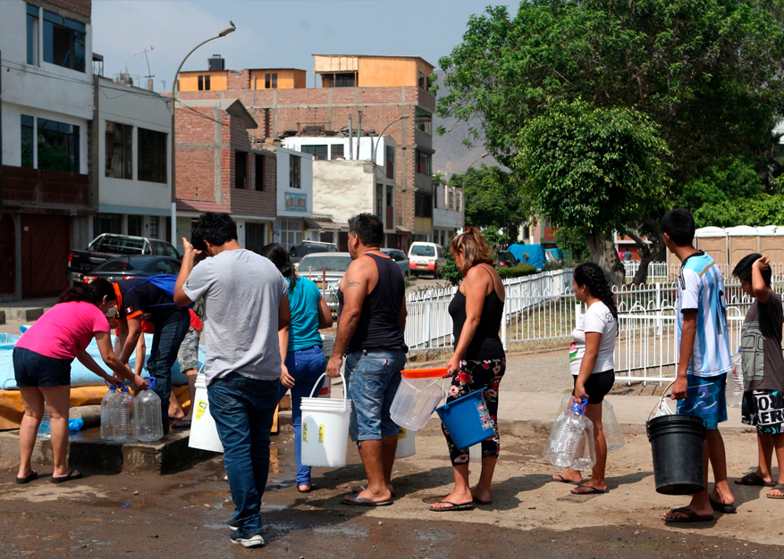

San Juan de Lurigancho y su lucha contra la delincuencia
Introducción
San Juan de Lurigancho es uno de los distritos más extensos y poblados de Lima, Perú. A lo
largo de los años, esta área ha enfrentado una serie de desafíos y problemas que afectan a su
comunidad de manera significativa.
Desde cuestiones relacionadas con la seguridad y el crimen, hasta desafíos en la
infraestructura y el acceso a servicios básicos, San Juan de Lurigancho se encuentra en una
encrucijada de necesidades urbanas. La diversidad socioeconómica, la densidad poblacional y
las disparidades en la calidad de vida son aspectos destacados que requieren atención
constante.Además, la calidad de la educación, la atención médica y la vivienda son
preocupaciones centrales en este distrito. La falta de oportunidades económicas y la
informalidad laboral también afectan a muchas familias en San Juan de Lurigancho.
Objetivos
- Analizar tendencias delictivas
- Evaluar las políticas de seguridad
- Explorar factores subyacentes
- Examinar la respuesta comunitaria
- Evaluar el papel de las fuerzas de seguridad
- Identificar buenas prácticas
- Proponer recomendaciones
Estadísticas de delitos, denuncias, etc.
San Juan de Lurigancho es uno de los distritos más grandes y con más población, con datos según la inei en el 2023 está llegando a más de 1 millón 200 mil habitantes.
Según la base de datos de la PNP, en el primer trimestre del 2021 se registraron 12 mil 462 incidentes de robo (138 al día); en 2022 llegó a 20 mil 030 casos (223 al día); y en 2023, se elevó a 26 mil 652 robos (296 al día)
Factores que contribuyen a la problemática.
La situación de inseguridad ciudadana en San Juan de Lurigancho es sumamente crítica. En la
actualidad no es solo es el de mayor índice de criminalidad en Lima Metropolitana, sino también
a nivel nacional, a nivel distrito; así lo señaló el electo alcalde de ese distrito, Gonzales A.
(2022) quién se mostró sumamente preocupado por esta situación. Así mismo el Comité Distrital de
Seguridad Ciudadana del distrito de San Juan de Lurigancho viene realizando en forma conjunta
con sus integrantes, el presente Plan de Acción de Seguridad Ciudadana 2023, el que tiene como
finalidad la toma de conciencia y cambio de aptitud en el distrito; así como iniciar, promover y
continuar proyectos de prevención con los jóvenes en temas del consumo indebido de alcohol,
drogas, violencia familiar, de género, pandillaje así como conductas de riesgo para poder de
esta manera minimizar los niveles de inseguridad y violencia en el distrito.
La problemática de la delincuencia en San Juan de Lurigancho, es influenciada por una serie de
factores interrelacionados. Algunos de los factores clave que contribuyen a esta problemática
incluyen la desigualdad económica ya que por falta de oportunidades laborales pueden llevar a la
delincuencia como una opción para obtener ingresos en comunidades desfavorecidas; Redes de
pandillas y crimen organizado porque la presencia de pandillas y grupos delictivos organizados
puede contribuir a la violencia y la delincuencia en la zona; Falta de aplicación de la ley y
corrupción debido a que la falta de respuesta efectiva por parte de las autoridades y la
corrupción en las fuerzas del orden pueden minar la confianza de la comunidad en las
instituciones y aumentar la impunidad. Entre uno de los factores destacados es sobre la
migración interna porque el crecimiento de la población debido a este factor puede ejercer
presión sobre los recursos y aumentar la competencia por empleos y viviendas, lo que puede
contribuir a la delincuencia.
Además el término de inseguridad ciudadana hace referencia al temor que sufre la población a
sufrir posibles violaciones, asaltos, agresiones o secuestros como consecuencia del alto grado
de delincuencia, sin embargo, la lucha contra la delincuencia es un desafío continuo que
requiere la colaboración de múltiples actores y un enfoque integral.
Efectos socioeconómicos de la problemática.
Los impactos socioeconómicos del distrito de San Juan de Lurigancho son diversos y complejos. Algunos aspectos que se pueden mencionar:
La región experimentó un gran cambio debido a la inmigración de personas provenientes de diversas regiones del país, lo que afectó el desarrollo económico, social y cultural del lugar.Desde la llegada de migrantes del interior del país, este lugar se ha disparado y se ha convertido en una de las zonas más pobladas de la capital peruana. Estos ciudadanos, la mayoría de los cuales huyeron del terrorismo que destruyó sus lugares de origen, tenían un sueño claro: encontrar oportunidades en la gran ciudad. Al principio muchos de ellos llegaron al centro de Lima, donde alquilaron pequeñas habitaciones buscando un lugar donde vivir. San Juan de Lurigancho fue un destino ideal para muchos de estos migrantes debido a la expansión urbana y la disponibilidad de tierras. La artimaña del peruano se hizo evidente de inmediato. Los terratenientes de la zona vieron un negocio rentable en la venta de parcelas y comenzaron a subdividir sus tierras. Estas parcelas de aproximadamente mil metros cuadrados se han convertido en una oportunidad asequible para quienes buscan una vivienda propia. Sin embargo, en 1980 se acabó la disponibilidad de terrenos con servicios básicos como agua y electricidad. Las personas de bajos ingresos tuvieron que encontrar nuevos lugares para vivir, incluso si eso significaba vivir sin servicios básicos. La población, lejos de quedarse de brazos cruzados, comenzó a movilizarse mediante marchas y manifestaciones para mejorar sus condiciones de vida. El ascenso de San Juan de Lurigancho no se detuvo ahí. La construcción de importantes obras públicas como la línea 1 del metro, universidades y modernos centros comerciales atrajeron inversiones y aumentaron la demanda de suelo en la región. Los precios de las viviendas en las montañas han aumentado, lo que refleja el continuo crecimiento y desarrollo de la zona. Con el paso de los años, la Meseta de San Juan de Lurigancho ha alcanzado su máxima capacidad. No fue posible construir más casas y entonces la población decidió expandirse hacia los cerros. Hasta el día de hoy, estos relieves son destino de colonos que buscan un lugar donde vivir.
La región tiene casi 900 mil habitantes, por lo que es la más poblada de Lima y Perú. La mayor parte de su población se dedica al comercio, la industria y los servicios. De acuerdo al Plan de Desarrollo del Distrito San Juan de Lurigancho 2015-2021 aprobado, las principales actividades comerciales y de servicios son: empresas diversas (pequeñas y grandes), industria procesadora, posadas, hoteles y todo tipo de alojamiento y restauración. Además, en 2012, se informó que la región tenía una capacidad de exportación de aproximadamente 130 millones de dólares al año.La región tiene problemas de desigualdad, pobreza, contaminación, inseguridad y falta de servicios públicos, que requieren una gestión municipal eficaz e inclusiva.
Medidas que ha tomado el alcalde ante la inseguridad
La situación en San Juan de Lurigancho es grave, con un aumento alarmante de la violencia
y
la delincuencia en la zona. El alcalde Jesús Maldonado ha solicitado la declaración de
estado
de emergencia para el distrito debido a la explosión ocurrida en una discoteca que dejó
15
personas heridas.
Además, se relaciona esta situación con la ola de violencia que ya ha cobrado la vida de
80
personas en lo que va del año en esta jurisdicción. La declaración de estado de
emergencia
implica una serie de medidas extraordinarias para abordar la situación. En este caso, la
presidenta Dina Boluarte, junto con el Consejo de Ministros del Perú, ha aprobado esta
medida con el objetivo de enfrentar la delincuencia y la criminalidad organizada en San
Juan
de Lurigancho.
“(La declaratoria de emergencia) va a permitir el control del orden interno a cargo de
la
Policía Nacional, pero el apoyo estratégico y los activos críticos a cargo de las
Fuerzas
Armadas. Y también esto va a permitir que se pueda ingresar y extender las actividades y
las
funciones policiales en el control del orden interno”, señaló Alberto Otárola Presidente
del
Consejo de Ministros del Perú.
Algunas de las medidas que suelen implementarse bajo un estado de emergencia incluyen:
Mayor presencia policial y militar en la zona: La Policía Nacional y las Fuerzas Armadas
pueden desplegarse para controlar el orden interno y reforzar la seguridad en el
distrito.
Ministro del Interior y alcalde de SJL acuerdan nuevas acciones para combatir la
inseguridad
ciudadana En ese marco, se acordó, entre otras medidas, la entrega por parte del
municipio
de SJL de diez patrulleros policiales repotenciados con recursos ediles.
Estas unidades serán reincorporadas a la flota de vehículos de la PNP, para fortalecer
la lucha
contra la inseguridad ciudadana en esa densa circunscripción territorial del cono Este
de la
capital.

Cooperativismo de la comunidad
Como en otras áreas urbanas, la cooperación comunitaria es esencial para abordar la inseguridad entre los residentes de San Juan de Lurigancho. A continuación se presentan algunos pasos concretos que la comunidad puede tomar para ayudar a resolver este problema.
- Los residentes pueden formar Comités de Seguridad Ciudadana para discutir y abordar temas relacionados con la seguridad de la comunidad. Estos comités pueden ser un foro para compartir inquietudes y desarrollar estrategias locales.
- Organizar patrullas vecinales en las que los residentes se turnen para recorrer las calles y vigilar su vecindario. Estas patrullas pueden ser especialmente efectivas durante las horas de la noche.
- Establecer grupos de WhatsApp u otras formas de comunicación en línea donde los vecinos puedan compartir información sobre incidentes o actividades sospechosas.
- Realizar talleres y charlas educativas sobre seguridad ciudadana para informar a los residentes sobre cómo prevenir delitos y protegerse a sí mismos y sus propietarios.
- Trabajar con las autoridades locales para mejorar la iluminación en áreas oscuras y abogar por mejoras en la infraestructura urbana que puedan contribuir a la seguridad.
La cooperación de la comunidad es esencial para abordar la inseguridad ciudadana de manera efectiva. Cuando los residentes se unen y trabajan juntos con las autoridades locales,pueden lograr un entorno más seguro y mejorar la calidad de vida en San Juan de Lurigancho y en cualquier otra comunidad.
Respuesta del Gobierno
El Alcalde de San Juan de Lurigancho ,Jesus Maldonado ,ha solicitado declarar en estado de emergencia el distrito por razones claras , la gran ola de delincuencia ,violencia y sicariato han estado siendo un gran problema para los residentes de este distrito.
Se menciona que el Alcalde visitó en más de una ocasión el Palacio de Gobierno ,haciendo petición al Ejecutivo incrementar el refuerzo policial para su distrito ,sin embargo en esas ocasiones rechazan esta posibilidad o tan solo no recibía una respuesta .
El Alcalde menciona que es necesario implementar las siguientes medidas para combatir la delincuencia en su distrito:
- Aumento de la presencia policialIncrementar el número de patrullaje policial en las calles del distrito ,con el objetivo de disuadir la comisión de delitos y brindar seguridad a los vecinos.
- Implementación de programas de prevención del delito:Implementar programas dirigidos especialmente a los jóvenes en riesgo y a aquellos que han tenido problemas con la ley.Programas cuyos objetivos son ofrecer alternativas de vida y evitar que se involucren en actividades delictivas
- Mayor colaboración entre la Policía Nacional y la comunidad: Participación activa de los ciudadanos en la prevención y denuncia de delitos.Implementar consejos de seguridad ciudadana y fomentar la creación de comités de autodefensa vecinal para trabajar en conjunto con la policía.
- Mejora en la iluminación y vigilancia de espacios públicos:as iluminaciones en las calles e instalaciones de cámaras de vigilancia en ciertas zonas para aumentar la seguridad en espacios públicos
- Fortalecimiento del sistema de justicia:Se busca agilizar los procesos judiciales y mejorar la eficiencia del sistema de justicia para garantizar que los delincuentes sean debidamente sancionados.
El Alcalde y la comunidad están en busca de estas medidas y siguen trabajando en conjunto para combatir la delincuencia en San Juan de Lurigancho y mejorar la seguridad en el distrito
Conclusión
La lucha contra la delincuencia en San Juan de Lurigancho implica un esfuerzo multifacético que abarca aspectos sociales, económicos y de seguridad. Algunas de las estrategias implementadas incluyen el fortalecimiento de la presencia policial en áreas vulnerables, la promoción de programas de prevención del delito, la inversión en infraestructura comunitaria y la sensibilización pública sobre la importancia de la participación ciudadana en la seguridad.
Es fundamental abordar las causas subyacentes de la delincuencia, como la pobreza, la desigualdad, la falta de oportunidades y la educación inadecuada. Asimismo, la colaboración entre la comunidad, las autoridades locales y la sociedad civil es esencial para lograr un impacto duradero en la reducción de la delincuencia y la mejora de la calidad de vida en San Juan de Lurigancho.
Video Informativo
Referencias
- (S/f-b). Gestion.pe. Recuperado el 10 de octubre de 2023, de https://gestion.pe/peru/gobierno-declara-en-estado-de-emergencia-distritos-de-san-jua
- Angulo J.(16 de septiembre de 2023)¿Por que el gobierno no declara en estado de emergencia SJL a pesar de los crímenes ,asaltos y extorsión que campean en el distrito?.recuperado de https://www.infobae.com/peru
- Redaccion EC.(17 de septiembre de 2023)Qué dijo el alcalde de SJL sobre marcha de protesta contra la delincuencia en su distrito ,recuperado de https://elcomercio.pe/respuestas/que/que-dijo-el-alcalde-de-sjl-sobre-marcha-de-protesta-contra-la-delincuencia-en-su-distrito-explosion-en-discoteca-de-san-juan-tdpe-noticia/
- Ramirez S.(22 de septiembre de 2023)Estado de emergencia en San Juan de Lurigancho y San Martin de Porres , recuperado de https://elcomercio.pe/lima/estado-de-emergencia-en-san-juan-de-lurigancho-y-san-martin-de-porres-que-otros-distritos-estan-evaluando-solicitar-dicha-medida-inseguridad-ciudadana-lima-norte-callao-alcaldes-crimen-delincuencia-noticia/
- Ramirez R. (2022) PLAN DE ACCIÓN DISTRITAL DE SEGURIDAD CIUDADANA 2022 MUNICIPALIDAD DE SAN JUAN DE LURIGANCHO https://web.munisjl.gob.pe/web/data_files
- (S/f-b). Gestion.pe. Recuperado el 8 de octubre de 2022 , de https://gestion.pe/peru/politica/inse
- Lugo, H., & Ruby, B. Construcción de una escala de resiliencia en inmigrantes venezolanos en el distrito de San Juan de Lurigancho, 2019l https://alicia.concytec.gob.pe/vufind/
/2023/09/16/por-que-el-gobierno-no-declara-en-emergencia-a-san-juan-de-lurigancho-a-pesar-de-los-crimenes-asaltos-y-extorsion-que-campean-en-el-distrito/
/codisec/PADSC-SJL-2022-PROY-FIN-CARLOS-ENRIQUE-GUTIERREZ-MACO-2021.pdf
guridad-ciudadana-san-juan-lurigancho-lidera-distritos-denuncia-269441-noticia/#google_vignette
Record/UCVV_191b3d59c7fc91
5e0c9884c4c8505322